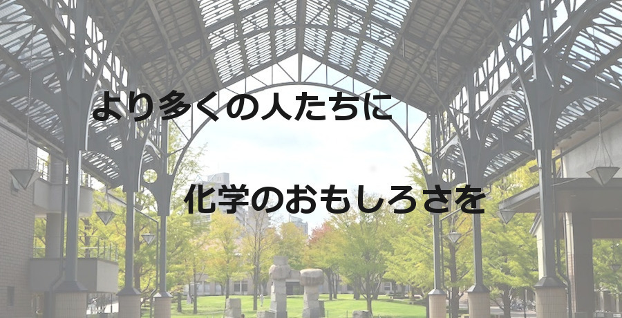

新着情報
- 2020/08/22
- 当大学でのみやこ祭の中止のお知らせ。
- 2019/12/07
- 2020年度メンバーに代替わりしました。
- 2019/10/12
- 体験！化学教室2019のHPを開設しました。
- 2018/12/08
- 2019年度メンバーに代替わりしました。
- 2018/02/26
- 2018年度メンバーに代替わりしました。
- 2016/12/03
- 2017年度メンバーに代替わりしました。
- 2016/04/01
- 2016年度メンバーに代替わりしました。
- 2015/04/10
- 歴代メンバーを公開しました。
- 2015/03/31
- ホームページを公開しました。
活動報告
- 2021/03/27
- 平和台図書館にて出張実験を行いました。
- 2019/12/14
- パークフィーネ南大沢にて出張実験を行いました。
- 2019/08/21
- 北とぴあにて出張実験を行いました。
- 2019/07/13
- 南大沢小学校にて出張実験を行いました！
- 2019/07/10
- 東山住宅クラブハウスにて出張実験を行いました！
- 2019/04/13,14
- Tokyoふしぎ祭エンス2019（於 科学未来館）に参加しました。
- 2018/08/22
- 北とぴあにて出張実験を行いました。
- 2018/08/20
- コニカミノルタ サイエンスドームにて出張実験を行いました。
- 2018/07/07
- 八王子市立南大沢小学校にて出張実験を行いました。
- 2018/04/21,22
- Tokyoふしぎ祭エンス2018（於 科学未来館）に参加しました。
- 2017/11/25,26
- サイエンスアゴラ2017（於 テレコムセンター）に参加しました。